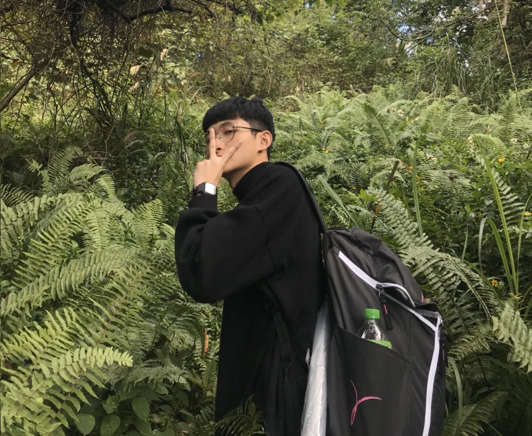

藉由此專案實作，有比較了解HTML和CSS的使用方式跟方法，雖然在學習和吸收知識的時間有點小趕，但是有跟小組成員齊心協力把網站製作出來，另外也學到在製作一個網站時，需要花一點功夫構思要呈現那些資訊在網站上，即便主題是介紹熟悉的校學，也得事前參考其他人所架網站過後，才能在製作此專案時比較有想法或概念。
經過這次的期中專案後，我更加了解一個網頁的組成與架構，也深知一個精美好看的網站背後需要付出多少心力與時間，才能兼顧訪客觀看的舒適度以及使用的便利性。
同時，特別感謝組員們的團結合作，正因為有每個人的創意發想與努力實踐，才能有現在這樣的豐碩成果。
或許這個網頁不是最吸引人目光的作品，但相信絕對也是值得一看。
藉由此專案實作，有比較了解HTML和CSS的使用方式跟方法，雖然在學習和吸收知識的時間有點小趕，但是有跟小組成員齊心協力把網站製作出來，另外也學到在製作一個網站時，需要花一點功夫構思要呈現那些資訊在網站上，即便主題是介紹熟悉的校學，也得事前參考其他人所架網站過後，才能在製作此專案時比較有想法或概念。

張世澄
生日：6月1日
興趣：打鼓、畫畫、
戶外活動
在這次期中的分組報告，讓我學習了很多東西。網路上平常我們瀏覽的網站，原來做出來是一件不容易的事。從最一開始小組的討論，主題、網頁的設計、拍影片等等，都可以說是初體驗。為了有更完美的呈現，組員們都經過了很多討論才決定出來，付出了許多的時間，每個人都做好自己的工作，才完成了這次的期中報告，每個組員都辛苦了。
這次的期中專案令我感到獲益良多，尤其是在動畫與特效的部分做起來十分有趣。比較困難的部分是hover與動畫並不能跨到其他物件上的css，只能用JavaScript來做。
總體而言本次專題除了圖片處理與配色令人頭疼外還是做的滿開心的，特別是首頁動畫，可以放很多有趣的東西進去。可惜原先設想的按鈕效果太難以實現最後還是沒能成功。